Incrediblecoasters Christmas & New Years 2011/2012
Six Flags Magic Mountain Disneyland Resort Knotts Berry Farm
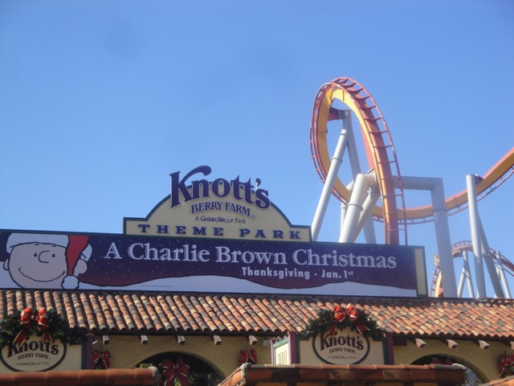
All right. 2011 is now gone and now we live in 2012. And in 2012, I have taken two visits to Knotts Berry Farm. Once on New Years Day, and the other a week later for a TV Shooting on Xcelerator for some Travel Channel Show. Yeah, I know its not part of the Christmas/New Years Season, but dammit!!! I didn't want a seperate update for it RIGHT after I posted this one.
LAME!!!! Montezoomas Revenge was down both days we were there!!! I think it does maintence at this time of year.
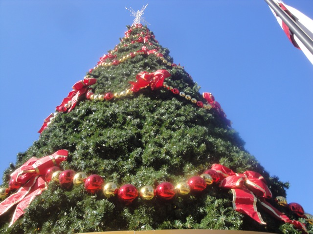
What the hell is that doing here? It's not Christmas Time!!! Get rid of that thing already!!!!
Read the caption above.
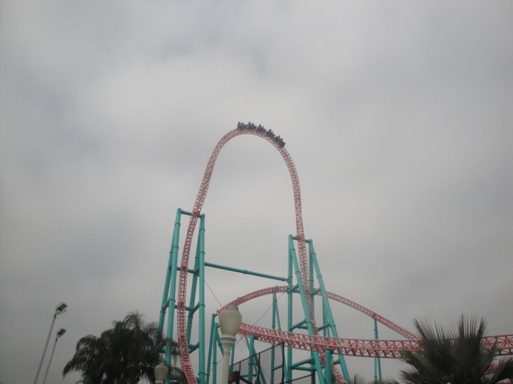
Time for our first coaster of 2012. Xcelerator.
Like I said before, we did a Travel Channel Shooting for a new show on Xcelerator that I'm guessing will air sometime this summer.
"So tell me. How is this ride connected to the latest raves?"
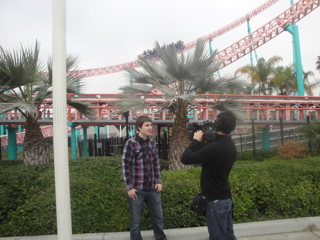
"I'd just like to let everyone know that this ride is vegan-friendly."
All right. After all that Xcelerator Goodness we filmed for the Travel Channel, its time for some more ejector air. So naturally, we rode Perilous Plunge.
Screw the Animatronic Hippos!!!! Save the fish from being raped at Knotts!!!!
BULLSH*T!!!!!!!
Ok. Maybe its a little more forceful than I thought.
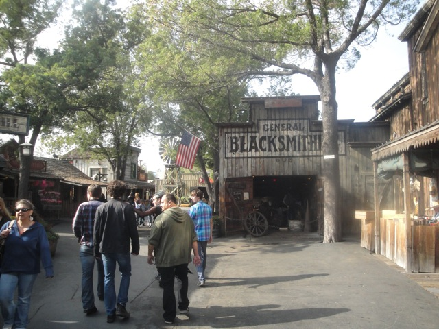
Ooh. Ghost Town looks pretty.
 Yeah. We marathoned Pony Express.
Yeah. We marathoned Pony Express.
 "PONY EXPRESS IS THE BEST RIDE EVER!!!!!!!!!!"
"PONY EXPRESS IS THE BEST RIDE EVER!!!!!!!!!!"
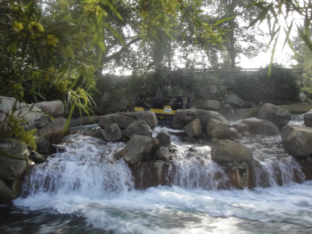
Yeah. We went on Bigfoot Rapids as well.
"Dude!!! I thought the Apocalypse wasn't supposed to happen till December!!! I actually got wet on Bigfoot Rapids!!!!"
I'm not kidding!!! Look at the water!!! Its getting into the boat!!!!
Damn. And I thought Disneyland on New Years Eve was crowded.
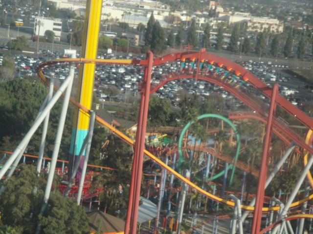
Meh. Parts of Silver Bullet were running fine today, but other parts seemed even more forceless than usual.
Even outside Knotts Berry Farm, you can't escape the Cedar Fair Trash Cans.
Why again is this McDonalds pink?
Ugh. Why do they have Alvin and the Chipmunk toys here. A stupid peice of sh*t movie...that grossed $239,979,003. I suddenly feel depressed right now.
Eew. NOT WORTH IT!!!!!!
Oh yeah. I still haven't been on Windseeker yet. Better go change that.
Was this supposed to be a thrill ride? Cause its not. Its pleasent, its enjoyable, but its certainly not a thrill ride. Nothing about it is scary.
You know, this frisbee isn't nearly as bad as it used to me.
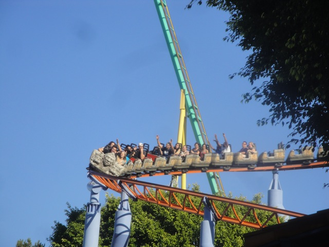
Meh. Still not a fan of this ride.
And yeah. They decorated it for Christmas time. They did a good job and all, but Christmas is over guys.
Well at least they quickly undecorated it. See, now its decorated.
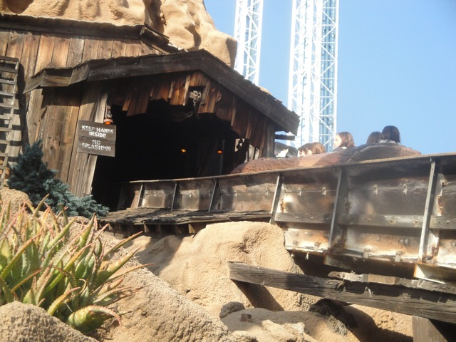
Now it's not. Now that I got that out of the way, SIT DOWN!!!!!!!!!
Oops. I dropped my change in the water. Let me go get it.
We rode Supreme Scream today as well.
Fun, but I'm mostly just looking foreword to Lex Luthor.
 Yeah. I think an Xcelerator re-ride is in order.
Yeah. I think an Xcelerator re-ride is in order.
 Dude. Xcelerator was running slow today. REALLY slow. I almost saw it roll back multiple times today.
Dude. Xcelerator was running slow today. REALLY slow. I almost saw it roll back multiple times today.
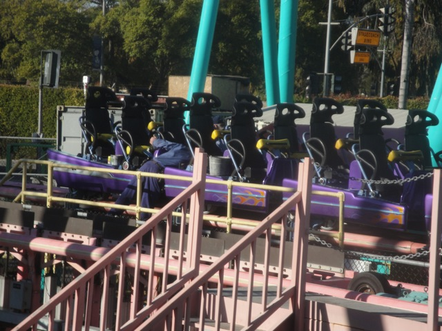
I'll see you with the Travel Channel Purple Train.
Oh yeah. That is such an accurate portrait of a California Christmas.
I want this ride in my backyard.
I can't remember the last time the Sky Cabin was open.
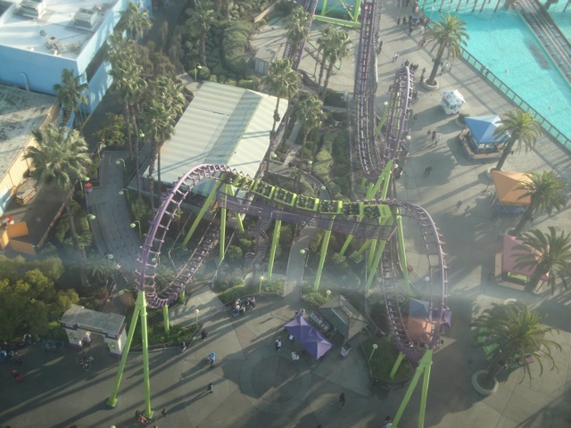
Hey Ceaser!!! Does this ride exist?
Dude!!! Riptide got my shoes wet!!!
Insert "It's not Christmas anymore caption" here.
Hey Alex!!! We got something for you to try!!!
"Hey. It could've been worse. You could've made me try the PB&J Soda."
And for dinner, we decided to eat at Buffalo Wild Wings. It was good, but next time, we learned not to come whenever a football game is playing. (STOP SCREAMING AT THE TV!!!!!! ITS JUST A GAME!!!! YOU'RE ALL ANNOYING AS HELL!!!!!)
Home